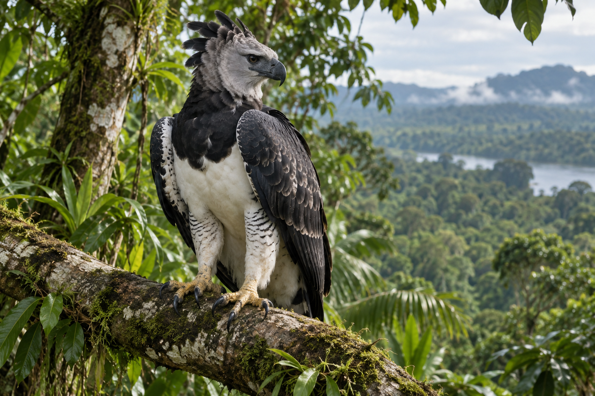

RaptorHarpia harpyja
Harpy Eagle
Panama's national bird, a huge eagle tied to mature lowland rainforest.
Near ThreatenedLowland forestResident
- Habitat
- Large humid lowland and foothill forests with tall nesting trees.
- Diet
- Arboreal mammals and large birds, including sloths, monkeys and guans.
- Size / wingspan / weight
- About 89-105 cm long, 176-224 cm wingspan and roughly 4-9 kg; females are larger.
- Distribution
- Southern Mexico through Central America into tropical South America.
- Where in Panama
- Darien, Caribbean-slope forests and large protected forest blocks such as Soberania and the Canal watershed.
- Behavior, nesting and breeding
- Resident canopy predator using large territories; nests high in emergent trees and breeds slowly.
- Interesting facts
- Its crest, talons and national-bird status make it a flagship for Panama forest conservation.